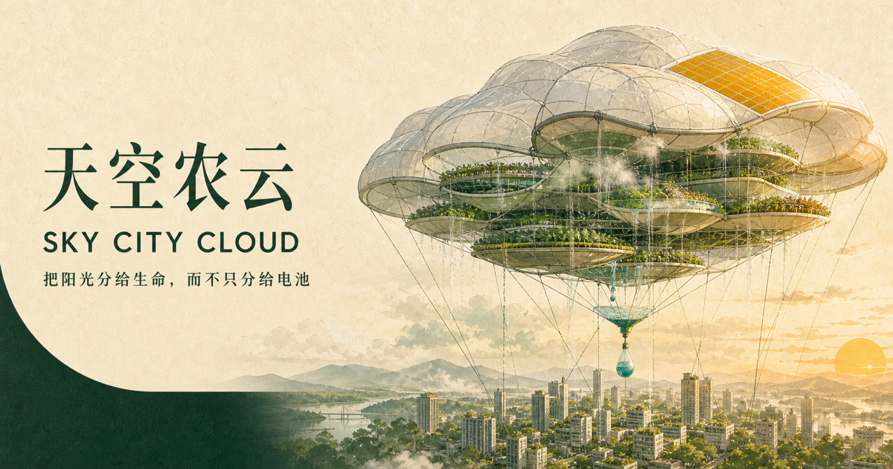

开放式城市基础设施 · 概念验证中
把阳光分给生命，而不只分给电池
一座与自然协作的云朵农场：在城市上空形成可控阴影，为街道和建筑降温；用分层农业生产作物，并作为水、营养与必要电力的空中补给站。

城市降温云朵农场 · 能源补给站让农业、城市与自然进入同一个循环
- 01可控阴影降温
- 02分层生态农场
- 03太阳能辅助供能
- 04水与营养循环
01 / IDEA
先使用阳光，再决定是否发电。
把阳光当作需要动态编排的城市资源，探索作物、阴影、蒸腾和低品位热之间的系统总收益。
45%作物光合
25%蒸腾冷却
20%水热循环
10%控制电力
02 / SANDBOX
先看量级，再谈承诺。
调整面积、辐照度和四向分配。结果是便于讨论的物理量级，不代表产量或降温承诺。
截获太阳功率8.00MW
模型未计入光谱选择性、膜透射、风致变形、作物饱和、泵送损耗和云量变化。
03 / CONSTRAINTS
最大的敌人是重量、风和失效方式。
风与阵风
大面积平台本质上是一张巨型风帆，必须模块化、可泄压、可分离。
水的重量
1 立方米水约重 1 吨，循环库存和回收路径决定农业舱是否成立。
极端天气
雷电、冰雹、台风与强对流要求主动降落、冗余系留和安全区。
空域与阳光权
阴影、居民采光、航线和屋顶光伏都需要公开治理。
OPEN SOURCE
把未来基础设施拆成可证伪的小实验。
欢迎农业、结构、材料、城市气候、水热、控制、安全和公共治理团队提交问题、数据、反例与试点场地。
在 GitHub 参与共建 ↗